ComputerGraphicMath
Table of Contents
- 3D Math Primer for Graphics and Game Development
- Chapter1 Cartesian Coordinate Systems
- Chapter2 Vectors
- Chapter3 Multiple Coordinate Spaces
- Chapter4 Introduction to Matrix
- Chapter5 Matrices and Linear Transformations
- Chapter6 More on Matrix
- Chapter8 Rotation in Three Dimensions
- Chapter9 Geometric Primitives
- Chapter10 Mathematical Topics from 3D Graphics
- Chapter13 Curves in 3D
- 向量点乘
- 矩阵和线性变换
- Clipping
- 参考资料
3D Math Primer for Graphics and Game Development, 2nd Edition 翻译。
Mathematics for 3D Game Programming and Computer Graphics, 3rd Edition 翻译。
<!– more –>
3D Math Primer for Graphics and Game Development
该部分内容，引用自《3D Math Primer for Graphics and Game Development, 2nd Edition》。
Chapter1 Cartesian Coordinate Systems
Chapter2 Vectors
Vector Cross Product
向量叉积所得向量的方向和左右手坐标系有关。
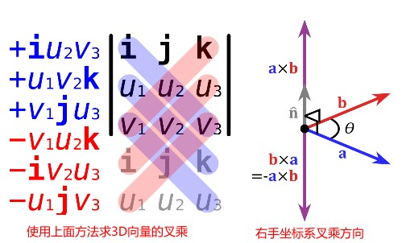
Chapter3 Multiple Coordinate Spaces
Chapter4 Introduction to Matrix
Matrix 的数学定义
矩阵的维度和表示
在线性代数中，矩阵是一个矩形数据网格，这个网格由 rows 行 columns 列数字排列组成。
下面是数学中矩阵的书面表示，其为 4x3 的矩阵(4 行 3 列)，矩阵通常使用大写字幕表示
m11 m12 m13
M = m21 m22 m23
m31 m32 m33
m41 m42 m43
当行数和列数相同时，称矩阵为方矩阵。如下 3x3 方阵：
m11 m12 m13 m21 m22 m23 m31 m32 m33
方阵中行数和列数相同的元素被称为对角线元素。
当方阵中除了对角线元素外其他元素都为 0，称这种方阵为对角方阵。如下 4x4 对角矩阵：
3 0 0 0 0 1 0 0 0 0 5 0 0 0 0 1
当对角方阵的对角线元素都为 1 时，称其为单位矩阵（记作 I）。如下 3x3 单位矩阵：
1 0 0 0 1 0 0 0 1
Matrix 运算
矩阵转置
=转置=> a b c a d g j d e f b e h k g h i c f i l j k l
4x3 矩阵经过转置运算后变为 3x4 矩阵
矩阵和标量相乘
m11 m12 m13 m14 km11 km12 km13 km14
kM = k m21 m22 m23 m24 = km21 km22 km23 km24
m31 m32 m33 m34 km31 km32 km33 km34
矩阵乘矩阵
矩阵相乘运算方法如下，矩阵相乘需要两个矩阵的行数列数相匹配，第一个矩阵的列数必须和第二个矩阵的行数相同，否则两个矩阵无法相乘。
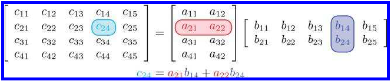
下面是矩阵乘法运算满足的一些规则：
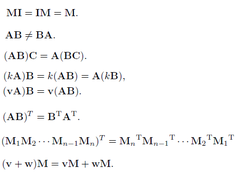
行向量和列向量对比
同一个向量，被当作行向量和列向量时，与矩阵运算的结果不同。所以当涉及矩阵运算时，区别向量是行向量还是列向量很重要。如下面：
向量[x, y, z]做为行向量时，矩阵每一行对应变换后新坐标空间的基向量(使用当前坐标系表示)，平移量在第 4 行。
m11 m12 m13
[x, y, z] m21 m22 m23 = [xm11+ym21+zm31, xm12+ym22+zm32, xm13+ym23+zm33]
m31 m32 m33
向量[x, y, z]做为列向量时，矩阵每一列对应变换后新坐标空间的基向量(使用当前坐标系表示)，平移量在第 4 列。
m11 m12 m13 x xm11+ym12+zm13 m21 m22 m23 * y = xm21+ym22+zm23 m31 m32 m33 z xm31+ym32+zm33
向量 v 依次按照矩阵 A,B,C 做变换。使用行向量形式表达时，记作 vABC。使用列向量形式表达时，记作 CBAv。
Unity Shader 中使用了列向量，矩阵的每一列表示新坐标系的坐标轴的基向量，平移矩阵中平移量在第 4 列。
DirectX 使用行向量
OpenGL 使用列向量
线性代数中使用列向量
本书中使用了行向量, 矩阵的每一行表示新坐标系的坐标轴的基向量，平移矩阵中平移量在第 4 行。
如果某本书中使用了列向量的形式，那么和本书相比相同的方程中，对应的矩阵需要被转置，这样才能使行向量形式和列向量形式的向量与矩阵相乘得到的向量的各个分量相一致。此时矩阵的每一列表示新坐标系的坐标轴的基向量。
m11 m12 m13
[x, y, z] m21 m22 m23 = [xm11+ym21+zm31, xm12+ym22+zm32, xm13+ym23+zm33] // 行向量
m31 m32 m33
m11 m21 m31 x xm11+ym21+zm31 m12 m22 m32 * y = xm12+ym22+zm32 // 列向量 矩阵转置 m13 m23 m33 z xm13+ym23+zm33
- OpenGL 中矩阵的行主序与列主序 https://www.jianshu.com/p/bfc8327eaad3
矩阵的几何解释
通常来说方阵可以表示任意的线性变换，线性变换可以拉伸或压缩坐标空间，但是不会让坐标空间扭曲。
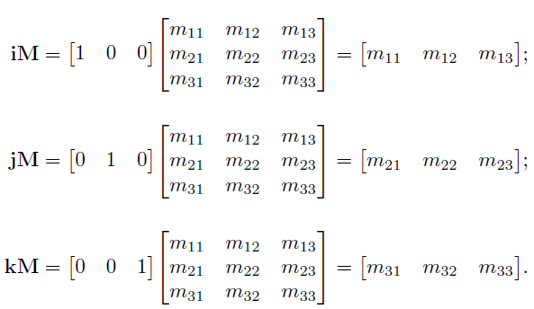
坐标系基向量（i,j,k）分别和矩阵 M 相乘后，变为了新坐标系下坐标轴的基向量，这些新的基向量就是矩阵对应的行（新的基向量使用当前坐标系表示）。
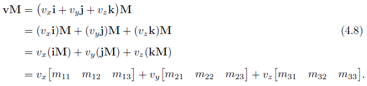
向量 v 和矩阵 M 相乘有两种解释：
- 向量 v 经过矩阵 M 变换后，成为新的向量 vM。
- 向量 v 所在的坐标系(i,j,k)经过矩阵 M 变换后，变为新的坐标系(iM, jM, kM)。
新的坐标系使用原始坐标系表示，其坐标轴向量为 \((iM, jM, kM)\)
向量 v 使用新的坐标系表示，其各个分量的值然为 \((v_x, v_y, v_z)\)
Chapter5 Matrices and Linear Transformations
Rotation
Rotation in 2D
二维坐标系下，只有绕某个点的旋转变换。
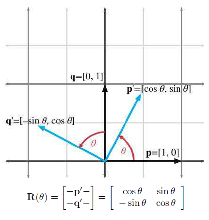
Rotaion in 3D
绕坐标轴旋转的矩阵：
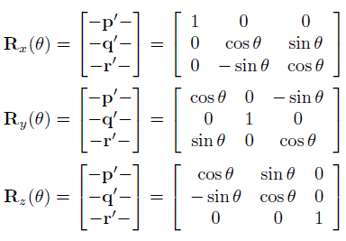
绕任意向量 n 旋转向量 v 的矩阵：
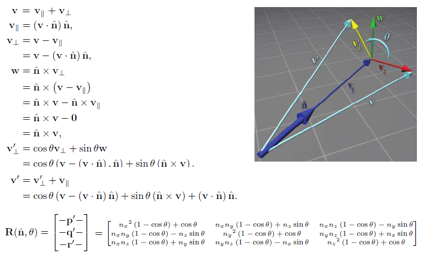
向量 v 绕向量 n 旋转 \(\Theta\) 角度变为向量 v'。将向量 v 分解为平行与向量 n 的向量和垂直与 n 的向量，按照上面步骤即可推出绕任意向量旋转矩阵。
Scale
沿坐标轴的缩放
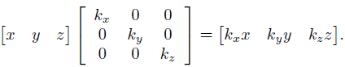
沿任意方向 n 对向量 v 缩放 k 倍
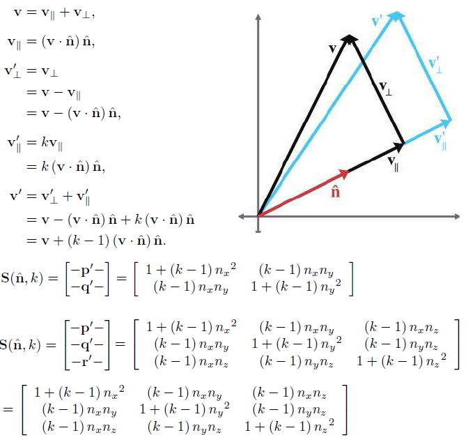
向量 v 沿着向量 n 方向缩放 k 变为向量 v'。将向量 v 分解为平行于向量 n 的向量和垂直于 n 的向量，按照上面步骤即可推出沿任意方向缩放矩阵。
Orthographic Projection
投影到坐标轴
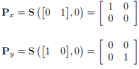
投影到坐标轴所在的平面
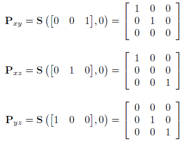
投影到任意直线或平面
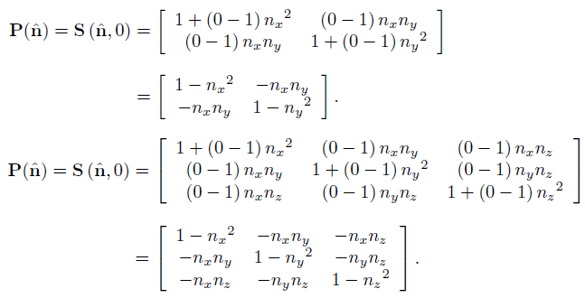
沿任意方向投影可以转化为沿该方向缩放 0.
投影到任意直线可以转化为沿垂直于该直线的方向缩放 0.
投影到任意平面可以转化为沿垂直于该平面的方向缩放 0.
Reflection
反射变换又称为镜像变换，这种变换将物体相对一条直线或一个平面进行翻转。
相对一条直线的反射变换:
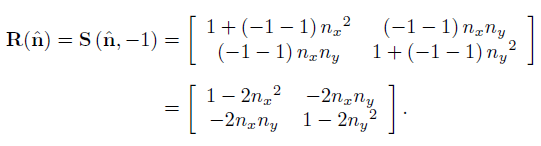
相对一条直线的反射变换，可以转化为沿垂直于该直线方向缩放-1 的变换。
相对于一个平面的反射变换：
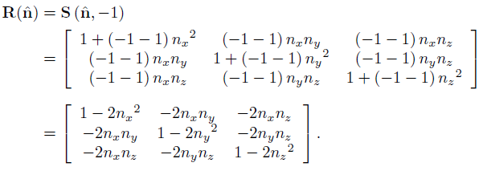
相对于一个平面的反射变换，可以转化为沿垂直与该平面的方向缩放-1 的变换。
Tips:
上面描述的相对于一个平面的反射变换中，平面必须经过原点。对于不经过原点的情况，需要考虑原点到平面的距离。具体原理参考下图：
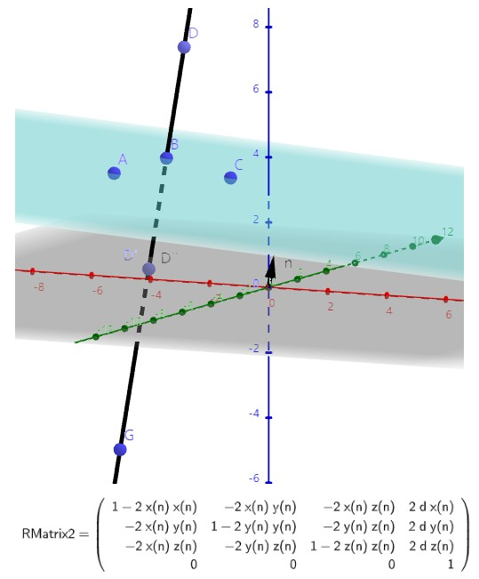
./ComputerGraphicMath/plane_reflection_01.ggb
Shearing
切变是一种可以将坐标空间拉伸的变换。角度会发生变化，但是面积和体积不会变。切变中一个坐标分量不变，将这个坐标分量乘一个值然后加到另一个分量,如 x' = x + sy.
二维空间中沿 x 坐标方向的切变
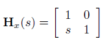
二维空间中沿 y 坐标方向的切变
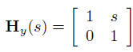
三维空间中的切变
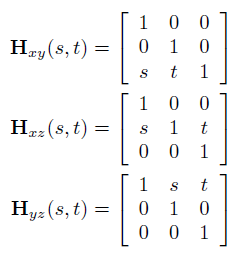
在 unitycatlikecoding\Rendering\Assets\MyTest\02ShearingTransform 工程中，使用 unity 展示了三维的切变变换。
Combining Transformations
Classes of Transformations
Chapter6 More on Matrix
Determinant of a Matrix
每个方矩阵对应一个特殊的标量，该标量被称为行列式。
Determinant of 2x2 and 3x3 matrices
方阵 M 对应的行列式记为|M|，有些书中也记为 det M 。矩阵不是方阵时，其行列式是未定义的。
按照下列方法计算 2x2 3x3 矩阵的行列式：
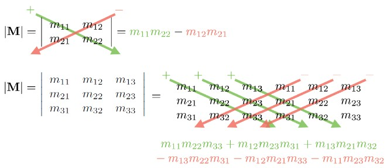
Minors and Cofactors
- minor 的定义
方阵 M 移除第 i 行和第 j 列后，所得的子矩阵的行列式记为 \(M^{ij}\) ，其就是一个 M 的 minor。

- cofactor(代数余子式) 的定义
minor 依据下面图示规则取正负号就是 cofactor
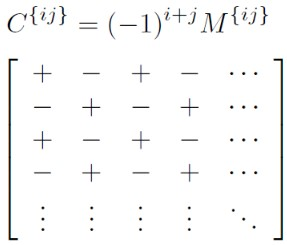
Determinants of Arbitrary nxn Matrices
- 首先，任意选择矩阵的一行或一列；
- 其次，将该行或该列的每个原始和该元素对应的 cofactor 相乘；
- 最后，将上一步得到的值相加，得到的就是该矩阵的行列式；
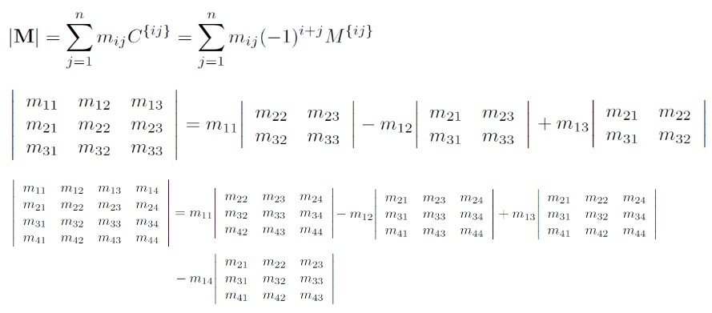
下面为矩阵行列式的一些重要性质：
1. 单位矩阵的行列式为1 . |I| = 1 2. 矩阵积行列式等于矩阵行列式的积 |AB| = |A||B| |M1M2M3...| = |M1||M2||M3|... 3. 矩阵的行列式和矩阵转置的行列式相等 |M^T| = |M| 4. 如果矩阵任意一行或任意一列的元素都为0，则该矩阵的行列式为0 5. 任意互换矩阵的两行或两列元素，其行列式取反 6. 将矩阵某行元素乘常量k加到另一行元素上，其行列式不变
Geometric Interpretation of Determinant
在 2D 空间，矩阵的行列式等于其基向量围成的平行四边形的有符号面积。如果平行四边形的朝向和坐标系朝向对立，则符号为负，否则为正。
在 3D 空间，矩阵的行列式等于其基向量围成的平行六面体的体积。如果平行六面体的朝向和坐标系朝向对立，则符号为负，否则为正。
矩阵的行列式和矩阵表示的变换引起的尺寸改变有关:
detM = 0, 表示变换不可逆，物体会被缩为一个点或一条直线。
0<detM<1, 表示变换使物体尺寸缩小。
detM > 1, 表示变换使物体尺寸放大。
矩阵的行列式可用于对矩阵表示的变换进行分类：
- 如果矩阵的行列式为 0，则矩阵包含投影；
- 如果矩阵的行列式为 1，则矩阵表示的变换不会使物体变形。（例如：旋转变换）
- 如果矩阵的行列式为负数，则矩阵包含反射（即：镜像）；
参考资料
- 行列式的本质是什么？ https://www.matongxue.com/madocs/247/
Inverse of a Matrix
另一个只可以应用于方阵的操作是求矩阵的逆矩阵。
矩阵 M 的逆矩阵记为 \(M^{-1}\) ，矩阵和其逆矩阵的积为单位矩阵。
不是所有的矩阵都可以求逆矩阵。很显然的一个例子是，如果矩阵的某行或某列的元素都为 0，则其逆矩阵不存在。如果一个矩阵的逆矩阵存在，则称该矩阵可逆(invertible)或非奇异(nonsingular).
可逆矩阵的每一行和每一列之间都是线性无关的。
奇异矩阵的行列式为 0，非奇异矩阵(可逆矩阵)的行列式不为 0。
The Classical Adjoint
矩阵 M 的伴随矩阵可用于求矩阵 M 的逆矩阵。
矩阵 M 的伴随矩阵记为 adj M, 其为矩阵 M 代数余子式的转置。

Matrix Inverse
通过下面的公式可以利用伴随矩阵计算矩阵的逆矩阵：
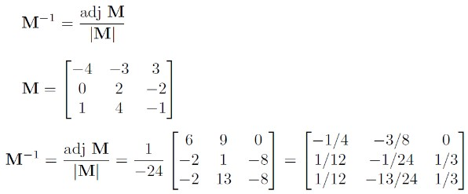
下面为逆矩阵相关的一些重要性质：
- 逆矩阵求逆得到原矩阵
\((M^{-1})^{-1} = M\) - 单位矩阵的逆矩阵是单位矩阵自己
\(I^{-1} = I\) - 矩阵转置的逆等于矩阵逆的转置
\((M^{T})^{-1} = (M^{-1})^{T}\) - 矩阵积的逆
\((AB)^{-1} = B^{-1}A^{-1}\)
\((M1M2M3...)^{-1} = ...M3^{-1}M2^{-1}M1^{-1}\) - 逆矩阵的行列式
\(|M^{-1}| = 1/|M|\)
Matrix Inverse(Geometric Interpretation)
逆矩阵表示逆变换。
\((vM)M^{-1} = v(MM^{-1}) = vI = v\)
Orthogonal Matrices
4x4 Homogeneous Matrices
4x4 Translation Matrix
4x4 Matrices and Perspecitive Projection
A Pinhole Camera
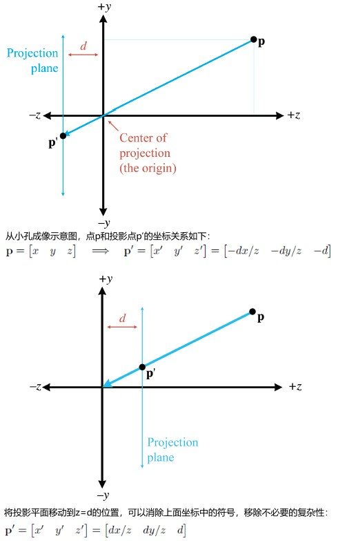
Perspective Projection Matrices
p′ = [dx/z dy/z d] = [dx/z dy/z dz/z] = [x y z] / (z/d)
| 1 0 0 0 |
| 0 1 0 0 |
[x y z 1] | 0 0 1 1/d | = [x y z z/d]
| 0 0 0 1 |
关于上面投影矩阵，需要注意以下几点：
- 乘该矩阵并没有执行透视变换，它只是将适当的分母放到了 w 分量中。透视除法发生在将 4D 坐标转化为 3D 坐标时。
- 投影矩阵有很多种变体。例如我们可以将投影平面放在 z=0 的位置，将焦点(投影中心点)放在[0,0,-d]的位置，这会得到一个略微不同的矩阵。
- 使用矩阵形式看起来过于复杂了。直接使用除法比使用矩阵显得更简单一些。使用矩阵的原因有：
- 4x4 矩阵提供了一种将投影表示为变换的方法。这样就可以和其他变换连接在一起了。
- 矩阵可以表示投影到非轴对称的平面
- 4x4 矩阵提供了一种将投影表示为变换的方法。这样就可以和其他变换连接在一起了。
- 在真实的图形几何管线中，投影矩阵不只是将 z 复制到 w 分量中。它和我们导出的投影矩阵有两方面的不同：
- 大多数图形系统会应用归一化的缩放值，使得远平面上的 w=1。这保证了对于渲染的场景来说用于深度缓存的值是恰当地分布的，从而最大化深度缓存的精度。
- 图形系统的投影矩阵还依据 fov 对 x 和 y 做相应的缩放。
- 大多数图形系统会应用归一化的缩放值，使得远平面上的 w=1。这保证了对于渲染的场景来说用于深度缓存的值是恰当地分布的，从而最大化深度缓存的精度。
Chapter8 Rotation in Three Dimensions
Orientation Vs Angular Displacement
Orientation 和 Angular Displacement 之间的关系和 Point 与 Vector 之间的关系类似。
Matrix Form
矩阵形式的优点
- 可以旋转向量。其他形式的旋转表示方法无法旋转向量。
- 图形 API 使用矩阵来表示旋转。
- 矩阵支持多个角位移串联起来。
- 使用矩阵求逆来得到相反的角位移。因为旋转矩阵是正交的，求逆矩阵只需要转置旋转矩阵就可以了。
矩阵形式的缺点
- 矩阵需要更多的内存空间
- 对于人类使用不友好。人类天生更倾向于使用角度来表示朝向，但是矩阵是使用向量来表示朝向的。
- 矩阵可能是不合法的。矩阵使用 9 个数字表示旋转，其中只有 3 个数字是必要的，另外 6 个数字是冗余的。一个表示旋转的合法矩阵必须满足 6 个约束，矩阵一行必须是单位向量，所有行之间必须是互相垂直的。
Euler Angles
Euler angles 将角位移定义为一个按照一定顺序的 3 个旋转分别绕 3 个互相垂直的轴的旋转。yaw-pitch-roll 对应于 yAxis-xAxis-zAxis
Euler Angles 系统中，旋转是相对于物体当前坐标轴的，每一次旋转后，物体的坐标轴都会变化。
Fixed-axis 系统中，旋转是相对于固定的坐标轴的，每一次旋转后，坐标轴是不会变化的。
EulerAngles 系统和 Fixed-Axis 系统是等价的，Fixed-Axis 按照 EulerAngles 系统的逆序进行旋转得到的结果和 EulerAngles 相同。
Unity 中使用的是 Fixed-Axis 系统。其旋转顺序为 zAxis-xAxis-yAxis。具体内容参考：../unity/UnityNote.html#orgf444aed
EulerAngles 优点
- 对人类来说易于使用
- 只使用了 3 个数值来表示 Orientation。这种方式占用内存少，另外以 EulerAngles 保存数据更利于压缩，可以用更少的位数和固定的精度来表示角度，由于压缩导致的精度丢失对于各个分量是均匀的。
- 表示旋转的 3 个数值都是有效的。随机选择 3 个数值组成一组有效的 EulerAngles，其可表示一个有效的旋转。也就是说不存在不合法的 EulerAngles。
EulerAngles 缺点
- 对于一个给定的朝向，EulerAngles 不是唯一的。
- 旋转 x 和 x+k*360 是等价的。可以通过限制旋转角度解决该问题。
- 旋转 x 和 x+k*360 是等价的。可以通过限制旋转角度解决该问题。
- 第二个旋转角度为 90 时，会产生万向锁问题。该问题无法解决。
- EulerAngles 的三个分量在空间中是独立的，不连续的。
- 物体小的朝向变化，可能导致分量中很大的变化。
- 插值 EulerAngles 会导致奇怪的旋转路径。 可以参考 unitycatlikecoding\RenderingAndAdvancedR\Assets\MyTest\07EulerAnglesRotation 工程中的演示。
- 物体小的朝向变化，可能导致分量中很大的变化。
Axis-Angle And Exponential Map Representations
欧拉旋转定理：任何三维角位移可以通过绕某个轴的单个旋转来完成。更精确的来说，给定两个朝向 R1 和 R2,存在一个轴 n，绕该轴进行一次旋转就可以从 R1 朝向变为 R2 朝向。
由欧拉旋转定理可知，我们可以使用一个轴 n 和一个角度 Θ 来表示旋转，这种表示方式被称为 Axis-Angle 形式。
n 取单位向量，则 \(e=n\Theta\) 此时就可以用一个向量来表示旋转了，旋转围绕的轴为将 e 单位化后的向量，旋转的角度为 |e|，这种表示方式被称为 ExponentialMap 形式。
ExponentialMap 形式通常用于存储角速度，因为这种形式求微分非常容易(这和其具有良好的插值属性有关系)并且可以容易地表示多个旋转。
这两种方式也有和 EulerAngles 一样的奇异点:
- 对于 Axis-Angle，当 Θ 为 0 时，n 有无线多个选择。对于 ExponentialMap，当Θ 为 0 时，e为零向量。
- 对于 Axis-Angle，(Θ,n) 和 (-Θ,-n)为相同的旋转。对于 ExponentialMap，(nΘ)=(-n-Θ)=e。
- 对于 Axis-Angle 和 ExponentialMap，n 不变，k360+Θ 会产生相同的旋转。当然，这也不是缺点，当表示角速度时，能够区分 0，360 是很重要的。当然，也可以通过限制 Θ<360 来避免不唯一的问题。
ExponentialMap 形式非常适用于表示角速度，当旋转角度非常小时，ExponentialMap 就可以当作矢量相加了，而不需要关心矢量的顺序。
Quaternions
Quaternions 和 Axis-Angle 的关系
[w v] = [cos(Θ/2) sin(Θ/2)n]
[w (x y z)] = [cos(Θ/2) (sin(Θ/2)nx sin(Θ/2)ny sin(Θ/2)nz)]
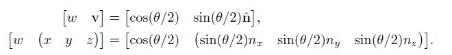
Quaternions 的基本属性和操作
四元数取反
-q = -[w (x y z)]=[-w (-x -y -z)]
q 和-q 表示相同的角位移。同一个角位移有两个不同的四元数表示形式，这两种形式互为相反四元数。
单位四元数
[1 (0 0 0)] 和 [-1 (0 0 0)]
代数中，只有一个单位四元数，其为[1 (0 0 0)] 任何一个四元数 q 和[1 (0 0 0)]相乘得到 q 本身。而 q 和[-1 (0 0 0)]相乘得到-q。
几何上，-q 和 q 表示相同的角位移，所以[-1 (0 0 0)]也为单位四元数
四元数 Magnitude （模长）
模长为 1 的四元数被称为单位四元数。
我们用于表示 Orientation 的四元数全部是单位四元数。
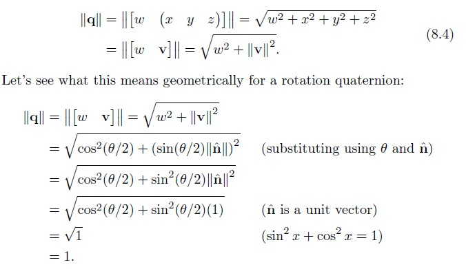
四元数的共轭 四元数的逆
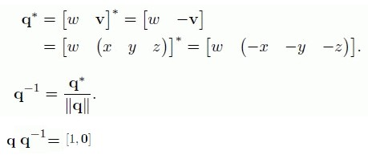
q 表示绕 n 旋转 Θ
q* 表示绕 n 旋转 -Θ
对四元数的 w 取反，也可以达到旋转方向取反的目的。
四元数乘法
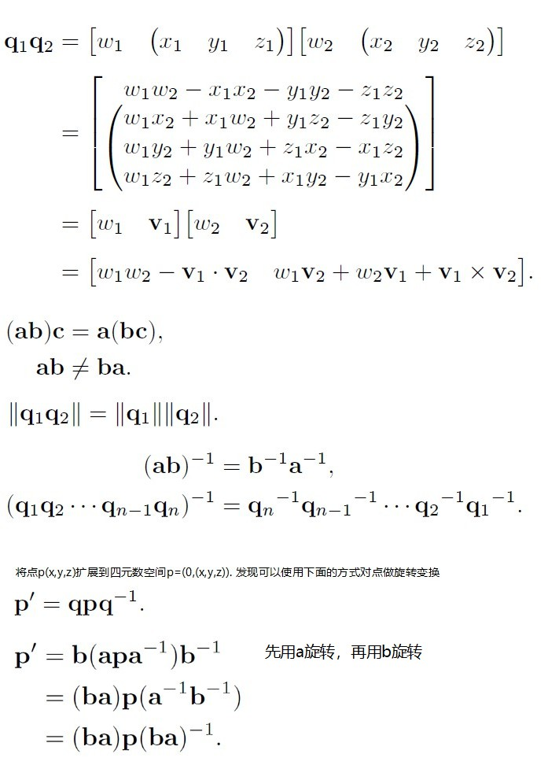
从上图可以看出，四元数乘法和向量叉积有相似之处。
上图中 qpq* 可用来旋转点的证明可以参考下面文章的描述：
四元数点积
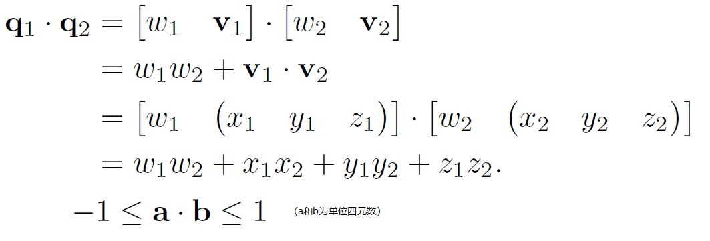
从上图可以看出，四元数点积和向量点积有相似之处。
从 No description for this link 得知 d=ba^(-1)，因为是单位四元数，所以 d=ba*，将 ba*展开可以发现 d 的 w 分量为 a.b。而四元数的 w 分量为 cos(Θ/2)，由此可见四元数的点积和向量的点积有相似的几何意义。即，点积越大表示 a 和 b 的朝向相差越小。
四元数 log exp(Exponential) power(Exponentiation) 标量的乘法
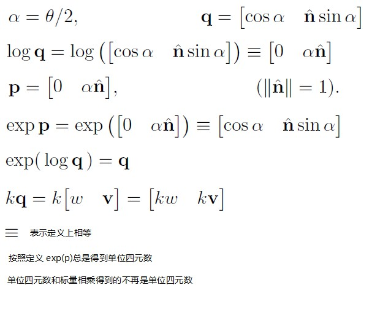
下面的解释比书中内容更容易理解：
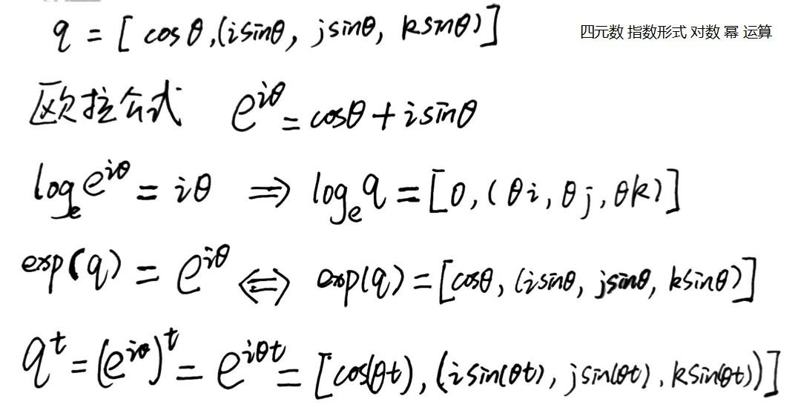
四元数求幂的意义和实数求幂的意义相似。
四元数求幂允许我们从一个角位移分离出一个分数角位移如：q^(1/3)
四元数求幂的定义： q^(t) = exp(tlogq)
// 求四元数幂的算法 // Quaternion ( input and output ) float w, x , y , z ; //Input exponent float exponent ; //Check for the case of an identity quaternion . //This will protect against divide by zero if(fabs (w) < .9999 f ) { //Extract the half angle alpha ( alpha = t h e t a /2) float alpha = acos(w); //Compute new alpha value flo a t newAlpha = alpha ∗ exponent ; //Compute new w value w=cos (newAlpha); //Compute new xyz value s float mult = sin(newAlpha) / sin (alpha) ; x ∗= mult; y ∗= mult; z ∗= mult; }
- 为什么复数可以用自然对数的底 e 和三角函数来表示？ https://www.zhihu.com/question/345358560
四元数 Slerp
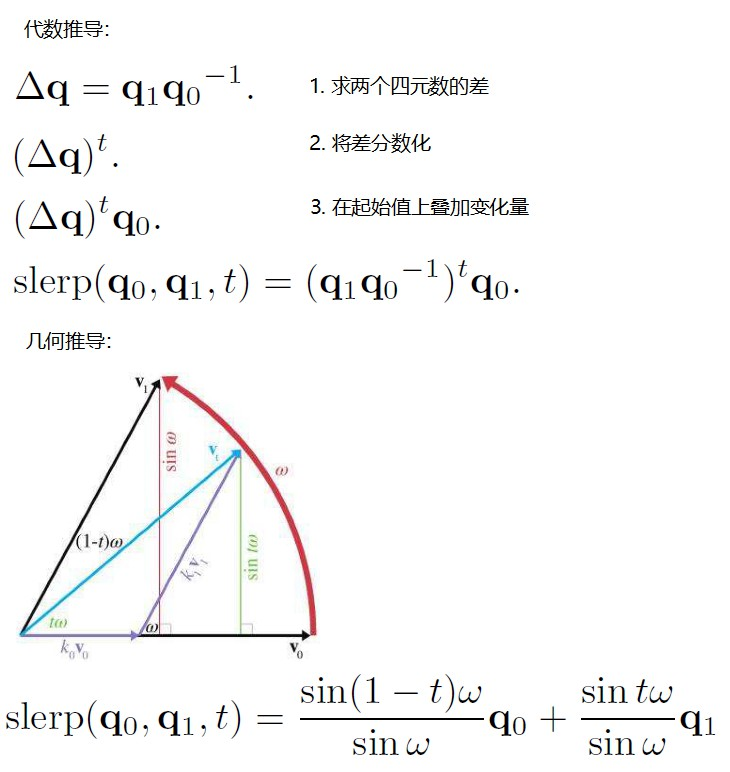
Tips: 将上面 2D 的几何推导推广到四元数空间就是四元数的 Slerp.
Slerp 需要解决的两个问题:
- q 和-q 表示相同的 Orientation，但是做为 slerp 的参数时，会得到不同的结果。在 2D 和 3D 空间中，不会有该问题，但是在 4D 空间下会有该问题。
- 解决办法是，选择 q0 和 q1 的正负号，使得 q0.q1 为非负数。这样从 q0 到 q1 始终都会选最短路径
- 解决办法是，选择 q0 和 q1 的正负号，使得 q0.q1 为非负数。这样从 q0 到 q1 始终都会选最短路径
- 当 q0 和 q1 非常接近时,sin(w)会非常小，这会导致除 0 的问题。
- 解决办法是，当 w 非常小时，使用线性插值来代替 Slerp。
- 解决办法是，当 w 非常小时，使用线性插值来代替 Slerp。
//The two input quaternions floa t w0, x0 , y0 , z0 ; floa t w1, x1 , y1 , z1 ; //The interpolation parameter floa t t ; //The output quaternion will be computed here floa t w, x , y , z ; //Compute the cosine of the angle between the //quaternions , using the dot product float cosOmega = w0∗w1 + x0∗x1 + y0∗y1 + z0∗z1 ; //If negative dot , negate one of the input //quaternions , to take the shorter 4D arc if ( cosOmega < 0.0 f ) { w1 = −w1; x1 = −x1 ; y1 = −y1 ; z1 = −z1 ; cosOmega = −cosOmega ; } // Check if they are very c lose together , to protect // against divide−by−zero float k0 , k1 ; if ( cosOmega > 0.9999 f ) { // Very close − just use linear interpolation k0 = 1.0 f−t ; k1 = t ; } else { //Compute the s i n of the angle us ing the //trig identity sinˆ2( omega) + cos ˆ 2 ( omega) = 1 float sinOmega = sqrt ( 1.0f − cosOmega∗cosOmega ) ; //Compute the angle from i t s s i n e and cos ine flo a t omega = atan2 ( sinOmega , cosOmega ) ; //Compute i n v e r s e of denominator , so we only have //to divide once float oneOverSinOmega = 1.0 f / sinOmega ; // Compute interpolation parameter s k0 = sin ( (1.0f − t ) ∗ omega ) ∗ oneOverSinOmega ; k1 = sin ( t ∗ omega ) ∗ oneOverSinOmega ; } // Interpolate w = w0∗k0 + w1∗k1; x = x0∗k0 + x1∗k1; y = y0∗k0 + y1∗k1; z = z0∗k0 + z1∗k1;
四元数优缺点
优点
- 平滑的插值。其他的形式都无法提供提供平滑的插值。
- 通过使用四元数叉乘可以将一个角位移序列转化为当个角位移。同样的操作，矩阵所涉及的标量运算会更多。
- 四元数共轭提供了简单计算逆角位移的方式，矩阵形式也只需要通过转置就可以了，EulerAngles 计算逆角位移则比较难。
- 四元数到矩阵的转变非常高效。
- 只使用了四个数字。
缺点
- 比 EulerAngles 占用内存要多 33%. 四元数的值在[-1,+1]区间内不是均匀分布的，所以将四元数压缩到一个固定精度的数值中很难，而 EulerAngles 和 ExponentialMap 比较容易。
- 有可能变为无效的四元数。
- 我们通过将四元数标准化，使其模长为 1，来避免该问题。
- 我们通过将四元数标准化，使其模长为 1，来避免该问题。
- 对人类使用不友好。
四元数和复数
下图是 2 维空间下，复数和矩阵的联系：
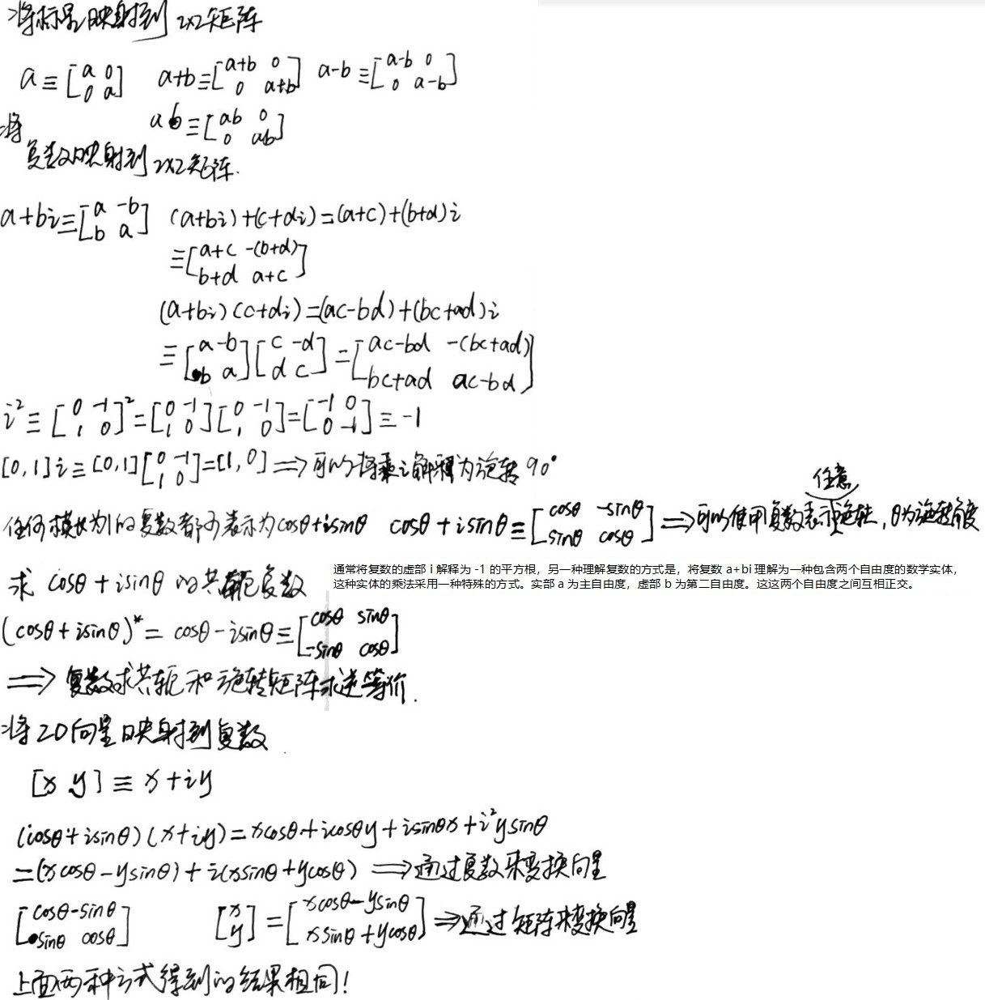
通常将复数的虚部 i 解释为 -1 的平方根，另一种理解复数的方式是，将复数 a+bi 理解为一种包含两个自由度的数学实体，这种实体的乘法采用一种特殊的方式。实部 a 为主自由度，虚部 b 为第二自由度。这这两个自由度之间互相正交。
下图是 4 维空间下，复数和矩阵的联系：

qpq* 可用来旋转点的证明可以参考下面文章的描述：
Comparison of Methods
将点在坐标系之间转换 （物体和世界坐标系）
- Matrix 可以，并且可以通过 SIMD 进行加速
- EulerAngles 不可以，必须转化为 Matrix 后进行
- ExponentialMap 不可以，必须转化为 Matrix 后进行
- Quaternion 理论上可行，但通常计算机中部这么做，依然是转化为 Matrix 后进行
串联旋转
- Matrix 可以，并且可以通过 SIMD 进行加速，需要注意多次计算后累积产生的错误
- EulerAngles 不可以
- ExponentialMap 不可以
- Quaternion 可以。比矩阵乘法使用更少的计算量，但可能无法利用 SIMD 优势。需要注意多次计算后累积产生的错误
旋转求逆
- Matrix 可以只需要转置操作
- EulerAngles 比较难
- ExponentialMap 容易，只需要向量取反
- Quaternion 容易，只需要四元数共轭操作
插值
- Matrix 非常不容易
- EulerAngles 可以但是万向锁问题会导致旋转失效
- ExponenialMap 可以，但是有一些奇异点问题（360x 形式的旋转量表示相同旋转）
- Quaternion 可以，并且 Slerp 提供圆滑的插值
易于人类理解
- Matrix 难
- EulerAngles 比较容易
- ExponentialMap 非常难
- Quaternion 非常难
存储效率
- Matrix 9 个数字
- EulerAngles 3 个数字并且易于压缩，压缩后精度损失分布平均
- ExponentialMap 3 个数字，不易于压缩。
- Quaternion 4 个数字。可以通过假设 w=0 或四元数模长=1 减少为 3 个数字。但不易于压缩。
对与给定的旋转有唯一的表示
- Matrix 是
- EulerAngles 否
- ExponentialMap 否
- Quaternion 有两种不同的表示，这两种形式互为相反。
可能变为非法的表示
- Matrix 是 矩阵可能是缩放 平移等等
- EulerAngles 否 任意三个数字都可以解释为旋转
- ExponentialMap 否 任意三个数字都可以解释为旋转
- Quaternion 是 必须为单位四元数
Converting between Representations
EulerAngle 和 Matrix 之间的转换
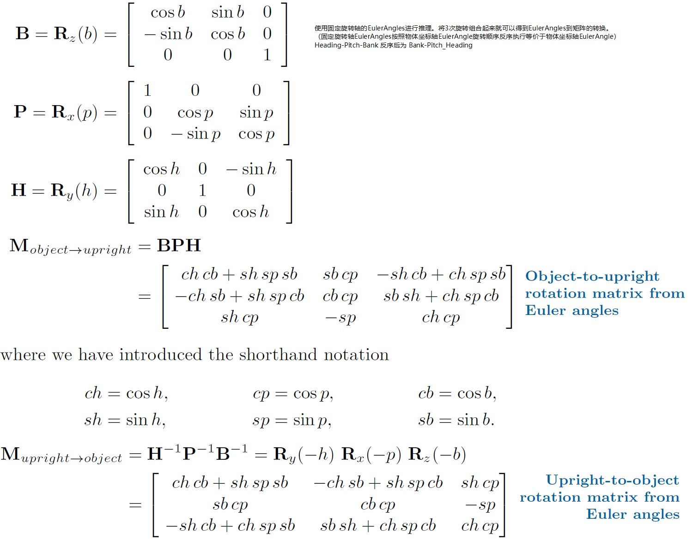
矩阵转化为 EulerAngle 需要注意一下几点：
- 需要知道旋转矩阵是 object-to-world 还是 world-to-object，这两个旋转矩阵互为转置，但是不同
- 给定一个角位移 EulerAngle 有无数多个表示，为了唯一化，做如下限制 -180<heading<=180 -180<bank<=180 -90<pitch<=90
- 有些矩阵是错误的形式，而且也必须忍受浮点数精度不够的问题。
// Extracting EulerAnagles from an object-to-world matrix void ExtractEulerAngle() { //Assume the matrix is stored in these variables: float m11,m12,m13; float m21,m22,m23; float m31,m32,m33; //We will compute the Euler angle value s in radians //and store them here : float h , p , b; //Extract pitch from m32, being careful for domain errors with //asin(). We could have values slightly out of range due to //floating point arithmetic . float sp = −m32; if(sp <= −1.0 f ) { p = −1.570796 f ; // −pi /2 } else if ( sp >= 1.0 f ) { p = 1.570796 f ; // pi /2 } else { p = asin ( sp ) ; } //Check f o r the Gimbal lock case , giving a slight tolerance //for numerical imprecision if( fabs ( sp ) > 0.9999 f ) { //We are looking straight up or down . //Slam bank to zero and just set heading b=0.0 f ; h=atan2(−m13, m11 ) ; } else { //Compute heading from m13 and m33 h=atan2 (m31, m33 ) ; //Compute bank from m21 and m22 b=atan2 (m12, m22 ) ; } }
Quaternion 和 Matrix 之间的转换
Quaternion 和 EulerAngle 之间的转换
Chapter9 Geometric Primitives
Representation Techniques
隐式方式
定义一个隐式形式的 Boolean 函数 f(x,y,z)，对于几何单元上的所有点该函数返回 true，而其他点则返回 false。
例如： x^2 + y^2 + z^2 = 1 表示球心在原点，半径为 1 的球。
圆锥曲线是典型的通过隐式表示的几何形状。圆锥曲线是平面和圆锥体相交形成的 2D 形状。其包含圆，椭圆，抛物线，双曲线，所有这些图形都可以通过下面的隐式方式表示：
Ax^2 + Bxy + Cy^2 + D = 0
Metaballs 是用于表示液体和有机器官形状的方法。通过一组模糊的球来定义体积。每个球定义一个三维的标量密度函数，其密度基于到球心的距离，球心密度最大，距离越远密度越小。空间中任意一点的密度为所有球在该点密度的和。液体或有机器官的体积被定义为密度大于某个阙值(该值不为 0)的部分。也就是说，这些球的范围是模糊的，当这些球是分离开的，那么这些球的一部分会在整体体积之外。当两个或更多球靠在一起时，模糊的区域会叠加增强，从而在两个球之间得到一个优美的固体。Marching Cube 算法是一种典型的算法，其可以将隐式形式的表面转化多边形 mesh。
参数方式
参数方式，是另一种表示形状的通用方法。
例如： x(t) = cos(2πt) y(t)=sin(2πt)，t即为参数，其从 0 变化为 1，其表示一个圆形在原点，半径为 1 的圆。
通常会使用归一化的参数，即参数范围为[0,1]。也可以根据情况任意选择参数 t 的范围。
当我们的函数使用一个参数来表示，我们称该函数是单变量的。单变量函数描绘出的是一个 1D 曲线。
双变量函数接受两个参数，通常使用 s,t 来表示。双变量函数描绘出的是一个表面而不是一条线。
直接的方式
最后一种表示方式是直接方式。所有直接利用形状自身的重要的、明显的信息来表示形状的专用方法都属于该类方式。
例如： 为了表示一条线段，我们可以直接使用线段的两端点。可以使用球心和半径来表示一个球体。
Common
不考虑几何单元的表示方式，任意一个几何单元都有其固有的自由度。假设其自由度为 n，则最少需要 n 个数字才能清楚表示该几何单元。对于同一个几何单元，不同的表示法所需的数字可能不同。多于自由度数量的数字，都是冗余的。
例如：平面上的圆有 3 个自由度: 圆心为（xc,yc），半径为 r，其参数方程为 x(t) = xc + rcos(2πt) y(t) = yc + rsin(2πt). 参数表示法中里面使用了 4 个数字(xc,yc,r,t). 使用隐式方式表示该圆，则为 (x-xc)^2 + (y-yc)^2 = r^2
Lines and Rays
Rays
直接方式 (Po, Pe)
参数方式 p(t) = p0 + td
分离的参数方式：
x(t) = x0 + tdx
y(t) = y0 + tdy
tips: d = (dx, dy)
2D 的射线有 4 个自由度(x0, y0, dx, dy)
Special 2D Representations of Lines
斜截式(隐式方式)
y = mx + b m 为斜率，b为截距
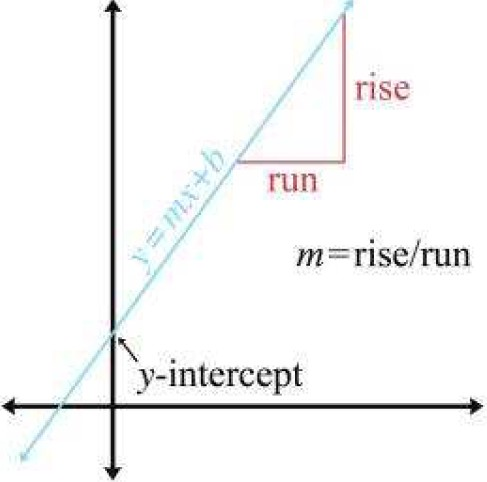
2D 直线只有两个自由度(m, b)。一个自由度用于旋转，一个自由度用于移动。
当直线为竖直时，其斜率为无穷大，上面的表示方法将无法使用。我们可以使用如下隐式方法来表示：
ax + by = d
假设直线的法向量 n=[a, b], 用向量表示上面方程：
|a |
|x y| |b | = d
上面表示中有三个自由度，其包含一些冗余。
上面方程两边可以同时乘任意非零常数，这样我们就可以自由选择法线的长度，选择法线 n 的长度为 1，此时法线 n 为垂直于直线的单位法向量，d为直线到原点的最近有符号距离。
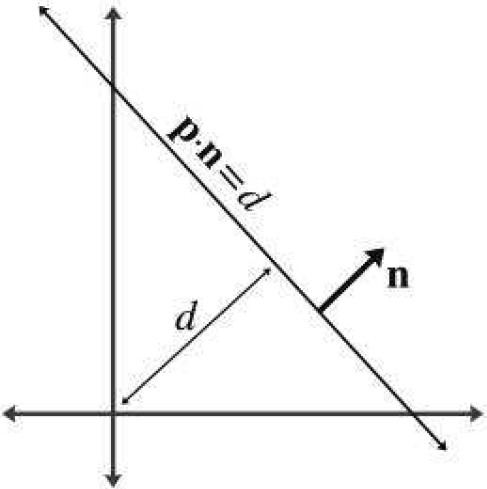
n 描述了直线的朝向，d描述了直线的位置。另一种表示直线位置的方法是，给定直线上一点 q。下图展示了这种表示方法的原理：
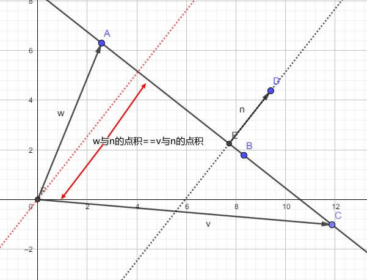
./ComputerGraphicMath/00_09_02_line_normal_point.ggb
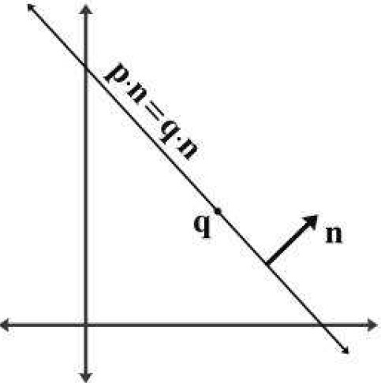
下面方式使用两个点来表示直线，到这两个点的距离相等的点都在该直线上。
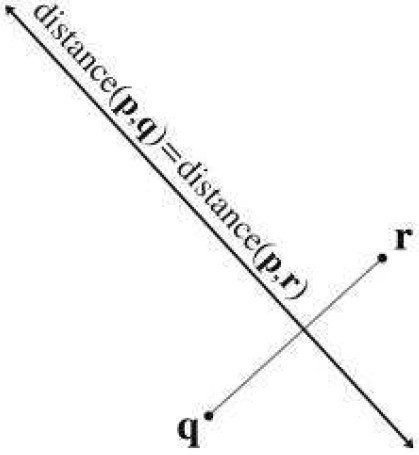
Converting between Representations
两点表示法与参数表示法互相转化：
Planes
The Plane Equation: An Implicit Definition of a Plane
在 3D 空间中，给定一个 P 点和一个法线向量 n，经过 P 点并且和法线 n 垂直的平面 p 可以被定义为一系列点 Q，Q 满足 dot(n, Q-P) = 0。
平面的方程为 ax + by + cz = d, 其中(a, b, c)为法线 n; d = dot(n, P-O)，d为平面到原点的距离. 可以将平面方程的意义理解为 OP 向量投影到平面法线 n 方向后的长度为 d。
可以使用(a, b, c, -d) 来表示平面，(ka, kb, kc, -kd) 和 (a, b, c, -d)表示同一个平面。
当 d=0 时，表示平面经过原点；
当 d<0 时，表示平面法线指向靠近原点；原点在平面前面
当 d>0 时，表示平面法线指向背离原点；原点在平面后面
设点 P'=(x,y,z,1)，平面 p=(a,b,c,-d)，若 dot(P', p)=0，则点 P'在平面 p 上。
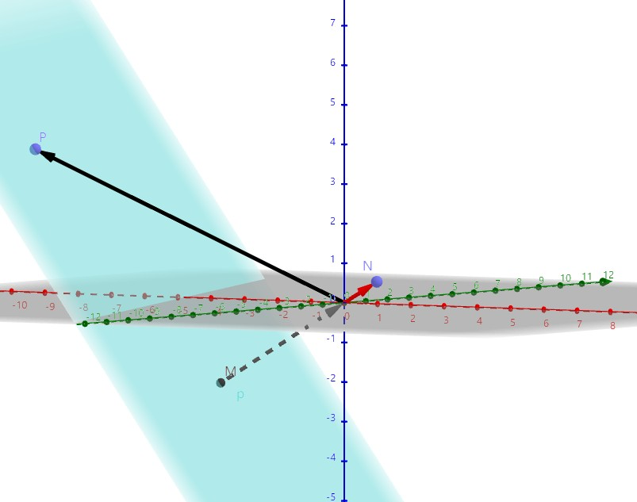
./ComputerGraphicMath/plane_illustrate01.ggb
Defining a Plane by Using Three Points
给定三个不共线的点，可以确定一个平面。
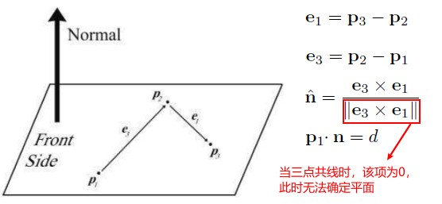
Best Fit Plane for More than Three Points
由一组多边形的 n 个顶点，得到这组顶点对应的平面。一个简单的方案是任意取 3 个顶点来求平面，但是，这三个顶点有可能共线，另外多边形可能是凹多边形，此时任取三个顶点得到的平面的法线方向可能是反向的。
按照下面方法可以得到正确的平面:
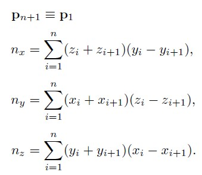
Distance From Point to Plane
dot(n, q-O) 为 q 点在 n 方向上到原点的距离，d为平面到原点的距离，因此，q点到平面的距离 a = dot(n, q-O) - d;
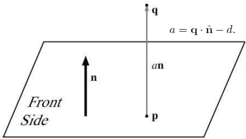
Triangles
Notation
一个三角形由按顺序列出的三个顶点组成。这三个顶点的顺序是非常重要的。在左手坐标系中，当我们从三角形的正面看时，我们通常按照顺时针的方向列出这三个顶点。
按照下图的方式标记三角形的内角，顺时针边向量，边的长度：
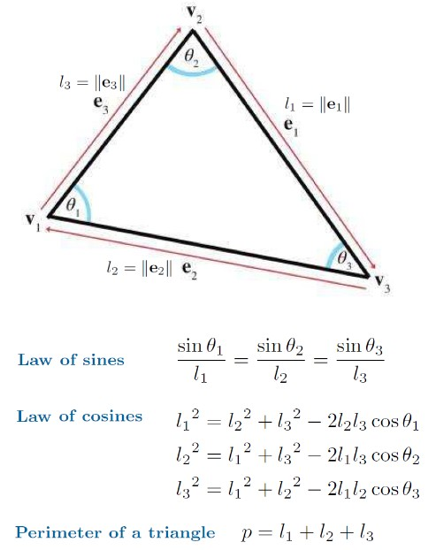
Area of a Triangle
已知三条边长求面积：使用 Heron 公式
下面文件展示了 sine law, cos law, Heron formula 的证明：
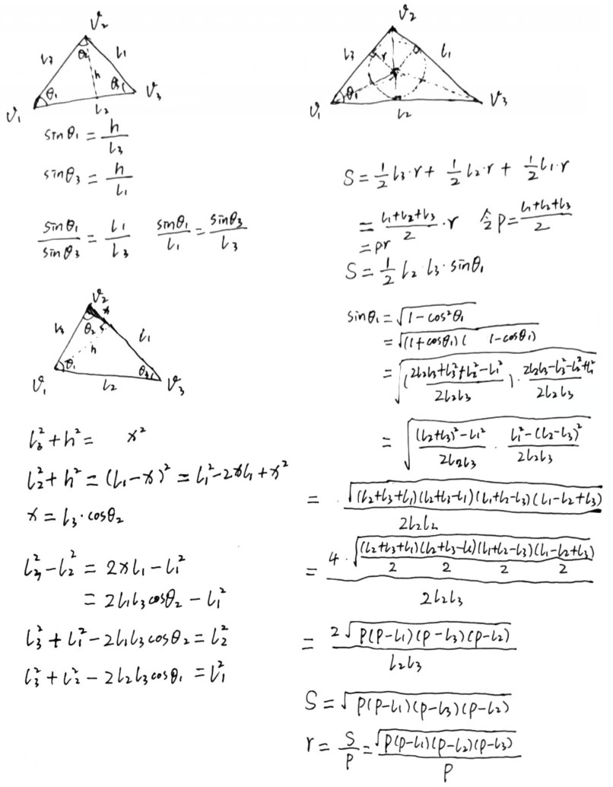
下面文件展示了三角形的内切圆：
./ComputerGraphicMath/00_09_06_triangle_area_01.ggb
已知三顶点坐标求面积
计算每条边和 x 轴围成的梯形区域的面积，并给面积赋予正负号，边的方向从左指向右为正，相反为负。
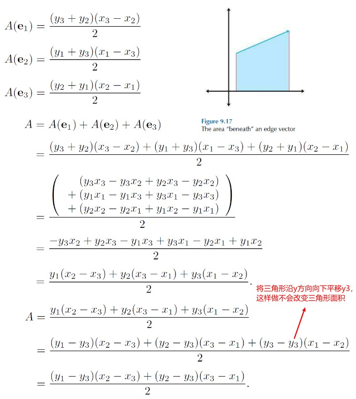
这种方式计算的结果和使用向量叉乘计算结果是等价的。
Barycentric Space
即使我们确实是在 3D 空间中使用三角形，但是三角形的表面是在同一平面上的，其天生就是 2D 的对象。当我们不关心三角形在 3D 空间中具体的朝向，只对三角形本身进行研究时，我们可以使用重心空间。重心空间是和三角形表面相关的，其独立于三角形所在的 3D 空间。
可以利用重心坐标来解决插值和求交点的问题。13 章 Chapter13 Curves in 3D 是重心空间更一般的形式。
三角形所在面上的任意一点都可以表示为三个顶点的加权平均。这些权重就是重心坐标。使用下面公式可以将重心坐标转化为标准 3D 空间坐标：
(b1, b2, b3) 对应的 3D 坐标为 b1v1 + b2v2 + b3v3
其中 b1 + b2 + b3 = 1, 这样的归一化约束去掉了一个自由度，这就是为什么尽管这里有 3 个坐标，但是其依然为一个 2D 空间。
重心空间将平面细分（tessellates）为多个和原始三角形大小相同的三角形：
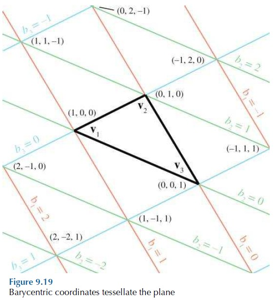
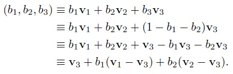
上面的推导，更加明确了，重心空间只有两个自由度。在重心空间中，我们完全可以只使用两个坐标来表示一个点。空间的秩不是由样本点的维度，也不是由样本点的个数决定的。例如，如果我们有两个样本点，重心坐标的维度为 2，此时其表达的是线。需要注意的是，这条线可以是 1D 的线（也就是对标量的插值），也可以是 2D 的线，或者是 3D 或更高维的线。
Calculating Barycentric Coordinates

如果三角形的 3 个顶点共线，则三角形的面积就会为 0，上面计算公式中的分母就会为 0，此时无法计算重心坐标。
计算 3D 空间中任意一点 p 的重心坐标要比 2D 空间要复杂。此时，我们有如下等式：
b1x1 + b2x2 + b3x3 = px
b1y1 + b2y2 + b3y3 = py
b1z1 + b2z2 + b3z3 = pz
b1 + b2 + b3 = 1
p 有可能不在三角形所在的平面上，此时 p 的重心坐标是未定义的。
我们可以通过直接忽略 x,y 或 z 其中一个分量，将三角形和 P 点投影到某个坐标平面上，然后再求重心坐标。
为了避免投影后的三角形顶点共线，选择投影后面积最大的坐标平面为投影平面。可以比较三角形所在面的 normal 的各个分量的绝对值，直接忽略绝对值最大的分量，得到的投影面积最大。
利用叉乘计算 Barycentric Coordinates 的另一种解释:
下面文件图形化展示了其原理：
./ComputerGraphicMath/00_09_06_barycentric_coord_calc_001.ggb
- 重心坐标（Barycentric coordinates）https://zhuanlan.zhihu.com/p/58199366
- 三角形重心坐标 https://zhuanlan.zhihu.com/p/65495373
Special Points
Chapter10 Mathematical Topics from 3D Graphics
How Graphics Work
渲染的最终目的是获得一张位图或一组按顺序排列的位图（用于制作动画）。一张位图是一个矩形颜色数组，数组的每个元素为像素（pixel 是 picture element 的简写）。位图也被称为 frame buffer，当我们将位图 copy 到最终的位图输出时，通常会执行附加的后处理。
我们如何确定每个像素的颜色？这就是渲染要考虑的最基础问题。
通过对自然界的分析（人之所以能看到物体是因为光进入了人的眼睛），以上问题可以转化为：从像素对应的方向进入到摄像机的光的颜色是什么？考虑进入摄像机的光，一共有以下两种情况：
- 光直接从光源进入摄像机
- 光从光源到达其他物体，然后经过物体的一次或多次反射再进入摄像机
我们可以将上面的问题分解为两个任务，本书将这两个任务称为渲染算法：
- 确定可见表面（Visible surface determination）. 找到在像素对应方向上最靠近摄像机的表面。
- 确定光（Lighting）. 确定从该表面发射和反射到摄像机的光。
确定可见表面
确定可见表面一共有两种方案：
- 射线追踪（Ray tracing）
- 深度缓冲区 （Depth buffering）
确定光
当给定颜色的光从给定的入射方向照射到表面，有多少光从特定的方向反射出来？BRDF 可以回答该问题。
BRDF 需要满足如下条件从而保证在物理上是合理的：
- 在任何方向上不会有负的光被反射
- 总的反射量不会大于所有的入射量
- 入射方向和反射方向互换，BRDF 不变
辐射度学和色度学
图形学其实就是测量光。如何测量光的颜色？如何测量光的亮度？
复合可见光可以由任何数量的任意波长的单频可见光组合而成。
颜色只是人类的感觉，其和频率不是同一事物。人类无法区别无限的单频可见光组合，不同的复合光可以产生相同的颜色感觉，这被称为条件等色。
电磁波谱的可见部分是连续的，所以 BRDF(f(x, ˆωin, ˆωout, λ)) 表达式中的λ理论上也是连续的。实践中，我们制作图形给人类看，我们将无数不同的波长减少为 3 个特定波长。
下图是辐射度学和色度学中测量光亮度使用的物理量：
渲染方程
考虑光所有可能的入射方向，会得到一个以 x 点为中心的半圆，该半圆朝向表面法线 normal 指向的方向。对于每个可能的入射方向ωin，我们测量入射方向上光的颜色。BRDF 可以告诉我们ωin 方向上的入射辐射率有多少被反射到ˆωout 方向从而进入我们眼睛。将所有反射到ˆωout 方向上的辐射率加起来就可以得到总的反射进入我们眼睛的辐射率。然后再加上所有从表面直接发射到我们眼睛的辐射率，就得到总的辐射率。这就是渲染方程：
Viewing in 3D
在渲染场景之前，需要选择一个摄像机和一个窗口。也就是说我们需要确定从哪儿渲染(视图的位置旋转和缩放)，以及要渲染到哪儿(屏幕上的矩形区域)。
指定输出窗口
有时候我们不会将图片渲染到整个屏幕上。下图展示了指定的输出窗口：
Pixel Aspect Ratio 像素宽高比
pixPhysx/pixPhysy = (devPhysx/devPhysy) * (devResy/devResx)
pixPhys 表示像素的物理尺寸
devPhys 表示显示设备的物理尺寸
devRes 表示显示设备的像素数量，也就是通常说的分辨率(Resolution)
通常 pixel ratio 为 1:1，即像素是正方形的
The View Frustum 视景体
视景体是摄像机可见区域的体积，其由 6 个裁剪平面包围而成。top、left、bottom、right 平面对应于输出窗口。near、far 平面对应于摄像机空间中的 z 值。
Field of View and Zoom
摄像机像其他物体一样也有位置和朝向，但是，它还有一个额外的属性 FOV。另一个你可能知道的概念是缩放或变焦(Zoom).当镜头向前推进（Zoom in）屏幕上显示的你正在看的物体会变大，镜头拉远(Zoom out)屏幕上显示的物体会变小。
FOV 是视景体截取的角度。事实上我们需要两个角度来描述，水平 FOV 和竖直 FOV。
变焦倍数描述的是物体显示尺寸相对于 FOV=90 时的比率. 例如，变焦倍数为 2 时，物体的显示尺寸为 FOV=90 时的两倍。下图为 Zoom 的几何表示：
Zoom 和 FOV 的关系如下:
zoom = 1 / tan (fov/2)
fov = 2 arctan (1/zoom)
我们需要两个不同的 FOV，一个水平方向的 HFOV，一个竖直方向的 VFOV。我们可以任意选择这两个 FOV 值，但是如果这两个值不满足特定的比例关系，则最后渲染的图片会被拉伸。为了维持特定的比例，变焦倍数的比例必须和输出窗口的物理区域比例相同：
zoomy/zoomx = winPhysx/winPhysy = window aspect ratio
zoomy/zoomx = winPhysx/winPhysy = winResx/winResy * pixPhysx/pixPhysy = winResx/winResy * devPhysx/devPhysy * devResy/devResx
- zoom 为摄像机变焦倍数
- winPhys 为输出窗口的物理尺寸
- winRes 为输出窗口的像素分辨率
- pixPhy 为一个像素的尺寸
- devPhy 为输出设备的物理尺寸。通常我们不知道具体尺寸，但是我们知道其长宽比。
- devRes 为输出设备的分辨率
- https://baike.baidu.com/item/%E4%BA%BA%E7%9C%BC%E8%A7%86%E5%BA%A6
Orthographic Projection
正交投影没有 FOV，因为正交投影的视景体为正方体。我们没有使用两个角度来定义视景体 x 和 y 方向上的尺寸, 而是通过视景体的宽和高来定义。变焦倍数也有不同的意义，其和视景体的尺寸相关：
zoom = 2/size;
size = 2/zoom;
和透视投影一样，有两个 Zoom 值，他们之间的比值需要和渲染窗口的宽高比要一致，否则画面会被拉伸。
Coordinate Spaces
Clip Space and the Clip Matrix
在摄像机坐标系下，顶点会被变换到 clip space（裁剪坐标系），也被称为 canonical view volume space（标准视景体坐标系）。对应的变换矩阵被称为 clip matrix(裁剪矩阵)，也被称为投影矩阵。
裁剪矩阵提供了两个主要的功能：
- 为投影做准备
将 w 分量中放入恰当的值，从而使得齐次除法可以得到希望的投影。对于典型的透视投影来说，意味着将 z 放到 w 分量。 - 应用变焦并且为裁剪做准备
缩放 x,y,z 从而可以将缩放后的 x,y,z 和 w 进行比较来进行裁剪。因为变焦倍数影响了视景体的形状，从而会影响到裁剪，所以缩放同时也考虑了变焦。
The Clip Matrix: Preparing For Projection
透视投影矩阵
| 1 0 0 0 |
| 0 1 0 0 |
[x y z 1] | 0 0 1 1 | = [x y z z] ==> [x/z y/z 1]
| 0 0 0 0 |
- 为什么使用齐次坐标系？
- 齐次坐标可以更自然地表示广泛的摄像机规格
正交摄像机不需要特殊对待
视景体平面不需要关于摄像机中心朝向对称 - 齐次坐标使得 z-clipping 和 x-y-clipping 完全一样。对于某些硬件，向量处理单元可以被并行地用于处理裁剪测试。
- 大多数 API 需要齐次坐标。
- 齐次坐标可以更自然地表示广泛的摄像机规格
- 为什么上面矩阵没有 d?
在 No description for this link 中我们推导出的投影矩阵中包含 d，而上面的投影矩阵中没有 d。
d 表示投影平面到焦点（投影中心点）的距离。上面之所以没有使用 d，是因为 d 的选取是不重要的，而为了方便我们选择 d=1。
在真实的摄像机中，增加焦点到投影平面的距离会让投影的物体变大，减小则会让投影的物体变小。下图从左到右 d 逐渐增大：
需要注意的是上图中胶片的尺寸是固定的，增大 d，胶片远离焦点平面，视景体对应的 FOV 变小。减小 d，胶片靠近焦点平面，视景体对应的 FOV 变大。当视景体变小时，视景体中的物体占用了可视区域的一大部分，导致其投影的像会变大。
在计算机中，胶片是投影平面和视景体相交的部分。当我们增大焦距时，投影的像也会对应增大，就像真实摄像机中发生的一样。但是，在计算机中，胶片也以对应的比例增大，而视景体大小则没有变换。因为投影的像和胶片增大相同的比例，所以最终显示在图片上的物体的大小没有变化。
总的来说，变焦是通过改变视景体形状来完成的。对于真实摄像机来说，改变焦距会改变视景体的形状，因为胶片大小保持不变。在计算机中，改变焦距不会影响渲染的图片，因为胶片尺寸也会对应增大，而视景体形状没有改变。所以上面矩阵中 d 的选择是无关紧要的。
正交投影矩阵
正交投影时，我们不希望执行透视除法，所以其投影矩阵如下：
| 1 0 0 0 |
| 0 1 0 0 |
[x y z 1] | 0 0 1 0 | = [x y z 1] ==> [x y z]
| 0 0 0 1 |
The Clip Matrix: Applying Zoom and Preparing for Clipping
透视投影矩阵
裁剪矩阵的第二个目标是缩放 x,y,z 分量，使得六个裁剪平面有简单的形式。如下图所示，注意如果两个摄像机的 near 和 far 分别相等，那么这两个摄像机的视景体被变换到裁剪空间后是完全相同的，但是变换所使用的矩阵各不相同。
// 缩放后，满足如下任何一个不等式的点在视景体外面： Bottom y < −w Top y > w Left x < −w Right x > w Near z < −w Far z > w // 缩放后，满足如下所有不等式的点在视景体内： −w ≤ x ≤ w −w ≤ y ≤ w −w ≤ z ≤ w
我们通过将 x 和 y 按照摄像机的变焦倍数进行缩放，从而将 top left right bottom 这 4 个裁剪平面放置到正确位置。下图显示了其中的变换原理：
./ComputerGraphicMath/20_06_11_clip_matrix.ggb
对于 near 和 far 裁剪平面，缩放后近平面的 z 值变为-near，远平面的 z 值变为 far，这样执行透视除法后，z的范围变为[-1,1]。由此可得到 z 和 z'的关系为：
Z' = AZ+B -Zn = AZn+B Zf = AZf+B A = (Zf+Zn)/(Zf-Zn) B = -2ZnZf/(Zf-Zn) 由此可得最终的裁剪矩阵为： zoomx 0 0 0 0 zoomy 0 0 0 0 (f+n)/(f-n) 1 0 0 −2nf/(f−n) 0 // 坐标经过上面的裁剪矩阵变换后得到的坐标 // 在视景体近平面上的点 (0, 0, n, 1) * Mproj = (0, 0, -n, n) // 在视景体近平面前面的点 (0, 0, n/2, 1) * Mproj = (0, 0, n(n-3f)/(2(f-n)), n/2) DirectX 规定裁剪变换后视景体的 z 值范围为 0<=z<=w，其对应的投影矩阵为： zoomx 0 0 0 0 zoomy 0 0 0 0 (f)/(f-n) 1 0 0 −nf/(f−n) 0
- Q&A: 当 z 为 0 时，透视除法不是会出现除 0 的问题么？
在执行投影变换之前会先执行 View 变换，将物体从世界坐标系转换为摄像机坐标系下，此时 z 为物体到摄像机原点的距离，摄像机设置了近平面 near，z 小于 near 的物体都会被裁剪掉，后续就不会发生除 0 的情况了。
// 下面为摄像机坐标系下(0,0,0)点 执行透视投影的过程 zoomx 0 0 0 0 zoomy 0 0 0, 0, 0, 1 0 0 (f+n)/(f-n) 1 = 0, 0, -2nf/(f-n), 0 -2nf/(f-n) 为z，0为w，其不满足−w ≤ z ≤ w，所以被剔除掉了，后续就不会发生除0的情况了 0 0 -2nf/(f-n) 0 // 下面为摄像机坐标系下(0,0,-1)点 执行透视投影的过程 zoomx 0 0 0 0 zoomy 0 0 0, 0, -1, 1 0 0 (f+n)/(f-n) 1 = 0, 0, -(f+n)/(f-n)-2nf/(f-n), -1 -(f+n)/(f-n)-2nf/(f-n)为z，-1为w，其不满足−w ≤ z ≤ w，所以被剔除掉了，后续就不会发生除0的情况了 0 0 -2nf/(f-n) 0
正交投影矩阵
正交投影时，因为其没有透视除法，所以裁剪变换后的 x,y,z 的范围直接就是[-1,1] 。如下图所示，由此可得到 p 和 p'的关系为：
w 为视景体的宽 h为视景体的高 X' = AX+B -1 = -Aw/2+B 1 = Aw/2+B A = 2/w = zoomx B = 0 Z' = AZ+B -1 = AZn+B 1 = AZf+B A = 2/(f-n) B = -(f+n)/(f-n) 由此可得到最终的裁剪矩阵为： zoomx 0 0 0 0 zoomy 0 0 0 0 2/(f-n) 0 0 0 −(f+n)/(f−n) 1 DirectX 规定裁剪变换后视景体的z值范围为[0, 1]，其对于的投影矩阵为： zoomx 0 0 0 0 zoomy 0 0 0 0 1/(f-n) 0 0 0 n/(f−n) 1
OpenGL 裁剪矩阵
上面的裁剪矩阵基于本书的默认惯例，即坐标系为左手坐标系，向量为行向量。 Direct坐标系为左手坐标系，向量为行向量。 OpenGL坐标系为右手坐标系，向量为列向量。 将上面的裁剪矩阵转化为OpenGL使用的形式，首先需要将矩阵转置，其次，由于右手坐标系摄像机空间中-z指向屏幕内，而其裁剪空间+z指向屏幕内(OpenGL的裁剪空间其实为左手坐标系)。因此需要将输入的z值取反。 Tips: 为何OpenGL的NDC坐标系为左手？ 为了将NDC坐标系原点和屏幕坐标原点一致。 如果NDC坐标系依然为右手，为了让z缓冲区中越小的值表示越近，越大的值表示越远，需要让坐标系正z方向指向屏幕内，即需要绕y旋转180度，此时坐标系的原点变为了右下角。 如果NDC坐标系转换为左手，此时坐标系正z方向指向屏幕内，且NDC坐标系原点在左下角。 由此可得OpenGL的透视投影矩阵为： zoomx 0 0 0 0 zoomy 0 0 0 0 -(f+n)/(f-n) −2nf/(f−n) 0 0 -1 0 对应的OpenGL的正交投影矩阵为： zoomx 0 0 0 0 zoomy 0 0 0 0 -2/(f-n) −(f+n)/(f−n) 0 0 0 1
Screen Space
透视除法(NDC 坐标系)
执行齐次除法即透视除法（OpenGL 中将齐次除法后的结果称为标准设备坐标）
./ComputerGraphicMath/00_10_03_04_world-to-ndc.webm
- 上面视频文件来自该文章 https://jsantell.com/3d-projection/
viewport 变换
当我们将几何体裁剪后，它将被投影到屏幕空间。首先执行齐次除法即透视除法（OpenGL 中将齐次除法后的结果称为标准设备坐标）。然后，将 x、y 坐标缩放到输出窗口。如下为公式表示：
screenx = clipx · winResx / (2 · clipw) + winCenterx
screeny = -clipy · winResx / (2 · clipw) + winCenterx
上面 clipY 需要取反，是由于 DirectX 规定屏幕空间中左上角为坐标原点。
OpenGL 则规定屏幕空间中右下角为坐标原点，其 clipY 不需要取反。
- clipX、clipY 转化为了屏幕坐标，那么 clipZ clipW 呢？
传统的方法是齐次除法后，clipZ/clipW 会被标准化，并将其值存储到深度缓存区中。具体的细节由哪种类型的裁剪值被用于裁剪以及哪种类型的深度值被存入深度缓存区。例如，OpenGL 中，概念上的惯例是 -1<=clipZ/clipW<=1，但是这可能对于深度缓存不够友好。驱动提供商需要将 API 的惯例转化为对硬件最友好的。
令一种策略被称为 w-buffering，其使用 clipW 作为深度值。大多数情况下 clipW 为摄像机空间 z 坐标值的缩放版本。当深度缓冲区使用有限精度的顶点数表示时，这种方式使得精度分布更平均。传统的以 clipZ/clipW 为深度值的方式，会导致近处的精度高，而远处的精度低。如果深度缓存区使用浮点数表示时，则这个问题就不会太重要。需要注意的是，w-buffering 不支持正交投影，因为其 w 值始终输出为 1.
在光栅化阶段，clipW 还被用于对贴图坐标，颜色以及其他顶点层次数据的插值做透视矫正。
插值透视矫正
下图展示了透视插值矫正的推导：

另一种思路是推导出屏幕空间中 lerp 参数(screenLerp)和世界空间中 lerp 参数(worldLerp)的关系，光栅化时，直接使用 screenLerp 求出 worldLerp，然后使用 worldLerp 进行插值。这种思路的推导，请参考下面链接：
下面文件为透视矫正原理的图形展示：
./ComputerGraphicMath/00_10_03_04_perspective_correct_02.ggb
Polygon Meshes
Texture Mapping
The Standard Local Lighting Model
Light Sources
Skeletal Animation
Bump Mapping
Tangent Space
Calculating Tangent Space Basis Vectors
下面文件展示了计算 Tangent Space 基向量的原理：
./ComputerGraphicMath/00_10_09_calc_tangent_space_basis_vector.ggb
The RealTimeGraphics Pipeline
Chapter13 Curves in 3D
向量点乘
- 点积和叉乘的出现背景是什么？ https://www.zhihu.com/question/349692615
矩阵和线性变换
变换物体和变换坐标系
有些情况下需要进行物体变换，另外一些情况下则需要进行坐标系变换。但是，这两种变换实际上是等价的，将物体变换一个量等价于将坐标系变换一个相反的量。
变换坐标系，其实就是将以该坐标系表示的所有物体都进行和该坐标系相同的变换。
矩阵旋转变换实例
逆时针旋转 Θ 的变换矩阵为
cos(Θ) sin(Θ)
-sin(Θ) cos(Θ)
其逆矩阵(顺时针旋转 Θ 的矩阵)为
cos(Θ) -sin(Θ)
sin(Θ) cos(Θ)
假定 Θ 为 30 度, 世界坐标系下点 W(2, 2) 通过上面的矩阵变换变为了 (cos(30), sin(30)) 点
Aw = [2, 2]
Ao = [2, 2] [cos(30), -sin(30)] = [2cos(30)+2sin(30), 2cos(30)-2sin(30)]
[sin(30), cos(30)]
物体坐标系下 Ao 的坐标和世界坐标系下 Aw 的坐标重合
假定 Θ 为 30 度, 物体坐标系下点 B(1, 1) 通过上面的矩阵变换变为了 (sin(30), cos(30))
Bo = [1, 1]
Bw = [1, 1] [ cos(30), sin(30)] = [cos(30)-sin(30), cos(30)+sin(30)]
[-sin(30), cos(30)]
物体坐标系下 Bo 的坐标和世界坐标系下 Bw 的坐标重合
下面的文件中表示了上面的变换过程：
./ComputerGraphicMath/20_05_08_RotationTrans.ggb
下图是上面文件对应的截图：
Tips: 需要注意的是通过新的物体坐标系的基向量和坐标原点构建的变换矩阵是新坐标系到世界坐标系的变换，其逆矩阵才是世界坐标系到新的物体坐标系的变换。
矩阵平移变换实例
世界坐标系到物体坐标系的矩阵表示为：
o = (0,0)
xAxis = (1, 0)
yAxis = (0, 1)
1, 0, 0
0, 1, 0
-3, -1, 0
物体坐标系到世界坐标系的矩阵表示为：
o = (3, 1)
xAxis = (1, 0)
yAxis = (0, 1)
1, 0, 0
0, 1, 0
3, 1, 1
下面 ggb 文件，展示了 \(A_w\) 的坐标变换:
./ComputerGraphicMath/20_03_29_A_wTrans.ggb
需要注意的是平移变换通过额外的维度来实现的，所以上面文件中，\(A_o\) 只在二维坐标系中正确，在三维坐标系中其正确的坐标应该是 (-1,1,2)
下面 ggb 文件，展示了 \(a_o\) 的坐标变换:
./ComputerGraphicMath/20_03_29_a_oTrans.ggb
需要注意的是平移变换通过额外的维度来实现的，所以上面文件中，\(a_o\) 只在二维坐标系中正确，在三维坐标系中其正确的坐标应该是 (4,2,2)
投影变换
投影变换推导
摄像机坐标系下，未执行投影变换时，Z值范围为[-f, -n]。
NDC 坐标的 Z 值范围为[-1,1]
ZBuffer 中存储[0,1]范围的 Z 值
投影变换及其逆变换推导
为什么离 near plane 越远，depth 精度越小？
GeoGebra 软件打开下面文件，可以动态改变 near 和 far 的值:
./ComputerGraphicMath/21_01_11_zfighting.ggb

Clip Space 是怎样的？
自己做深度剔除
vertexOutput vert(vertexInput input) { vertexOutput output; output.pos = UnityObjectToClipPos(input.vertex); output.texCoord = input.texCoord; output.screenPos = ComputeScreenPos(output.pos); output.linearDepth = -(UnityObjectToViewPos(input.vertex).z * _ProjectionParams.w); return output; } float4 frag(vertexOutput input) : COLOR { float4 c = float4(0, 0, 0, 1); float2 uv = input.screenPos.xy / input.screenPos.w; float camDepth = SAMPLE_DEPTH_TEXTURE(_CameraDepthTexture, uv); camDepth = Linear01Depth (camDepth); float diff = saturate(input.linearDepth - camDepth); c =lerp(c, float4(1, 0, 0, 1),diff < 1); return c; }
如何从深度缓冲区中重建世界空间位置?
使用投影矩阵逆矩阵
- Unity 从深度缓冲重建世界空间位置
- 求投影矩阵的逆矩阵 https://www.cnblogs.com/back-to-the-past/p/12293520.html
使用摄像机
参考资料
- OpenGL Projection Matrix http://www.songho.ca/opengl/gl_projectionmatrix.html
Clipping
./ComputerGraphicMath/01_clipping_using_homogeneous_coord.ggb
下面图片补充说明齐次空间透视投影矩阵产生的效果：
顶点经过过透视投影变换后，到了齐次裁剪空间，假设原始顶点 x,y 都为 0，此时裁剪空间的顶点可以使用 2D 坐标系描述，下面文件展示了该情况下，齐次空间的顶点。从下图可以看出，对线段 P0P1 进行裁剪时，无论如何 P0P1 和裁剪平面的交点都不会在 w=0 的线上，给定 near 和 far 值后，齐次空间的点(0,0,z',w')都会在直线 P0P1 上，改变 near 和 far 值会改变直线的斜率，但是斜率永远在(0,1)范围。因此，如果绘制的模型都是三角形、线段、点则不需要 w 裁剪平面。
./ComputerGraphicMath/w_clip_plane.ggb
下面文章中都应用了 W Clipping Plane，Why？
参考资料
- GeoGebra 数学工具 https://www.geogebra.org/geometry